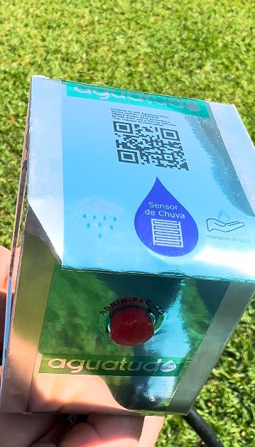
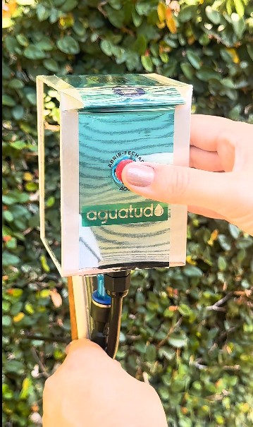
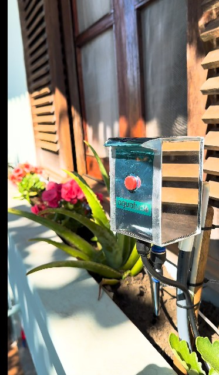
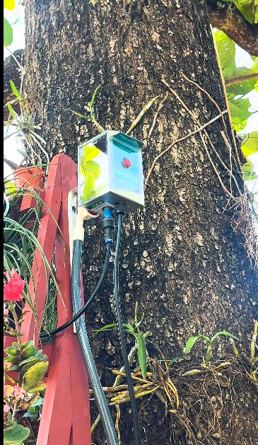
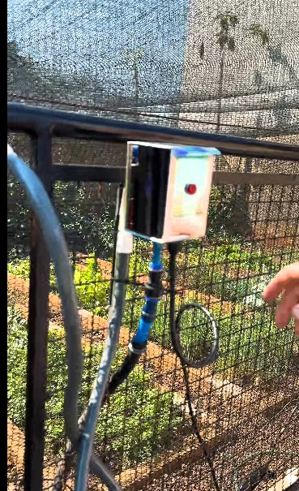

Timer importado · R$ 872
sem sensor de chuvaTem um botão de "Rain Delay": você vê que choveu, você aperta. Automação, isso não é.
Algumas plantas não são só plantas.
Um botão programa a rega. Ele repete todo dia — e poupa a água quando chove.
Sem app, sem nuvem, sem conta. Só uma torneira e uma tomada.
Quero o meu no primeiro lote90 unidades · setembro de 2026
o problema
O timer comum não sabe que está chovendo. Ele só sabe que são 6 da manhã. E os "inteligentes" consultam a previsão da sua cidade — não do seu quintal.
Você não precisa de uma previsão. Precisa de uma testemunha.
O Aguatudo mede a chuva que cai no seu chão. Choveu 10 minutos? A rega encurta na mesma medida. Choveu bastante? Hoje o céu trabalha.

simples assim
Uma torneira, uma tomada, um botão. Só isso.
Sem ferramenta, sem instalador.
Na torneira e na tomada. Os engates do kit levam a água até o vaso.
Você molha até ficar do seu jeito.
A rega começa na sua frente. Um toque encerra — e é essa rega que ele guarda.
Todo dia, no mesmo horário.
Sem você tocar em nada. A não ser que chova — aí ele poupa a água.

Já é o que você procurava?
Entrar na lista do primeiro lote90 unidades · setembro de 2026 · sem compromisso
a prova
Ninguém nesta faixa mede a chuva onde a planta está.
Tem um botão de "Rain Delay": você vê que choveu, você aperta. Automação, isso não é.
Vendido separado, exige instalação de 24 V, e os discos de cortiça viram consumível.
Sem sensor de chuva — usa previsão de terceiros, e exige gateway. Sem sinal, a rega não acontece.
Preços de concorrentes verificados em julho/2026.
nossa história
Nos anos 1980, Antonio Vendramin cuidava de um orquidário com quase dez mil vasos em Jundiaí. Levava água a cada um por microtubos, quando ninguém no Brasil fazia isso.
O Aguatudo é o neto retomando a obsessão do avô.

alcance
Engate rápido embutido: conectou, funcionou. Bailarinas, rotores, gotejadores, aspersores — se rega, encaixa. E liga na tomada: sem pilha para trocar.

Instalado de verdade, em lugares de verdade:



em ação
primeiro lote
São 90 unidades. Não vamos inventar um estoque que não existe — o que temos é uma lista com prioridade por ordem de chegada.
Timers comuns programam em minutos. O Aguatudo trabalha em segundos: 18:33:00 às 18:33:25, na terça, na quinta, ou a cada N dias. Num jarro pequeno, 25 ou 60 segundos é a diferença entre regar e alagar.

Temperatura mínima, média e máxima e minutos de chuva por dia — guardados no aparelho por três anos. É a estação meteorológica do seu quintal, sem assinatura e sem servidor de ninguém. Dá para baixar tudo em planilha (CSV), inclusive a curva fina de temperatura da semana.

Se faltar luz no meio da tempestade, ele não esquece a chuva que estava caindo — ao religar, retoma de onde parou. Antes, uma queda de energia podia fazer o sistema regar logo depois, como se nada tivesse chovido.
Caiu a energia na hora da rega? Ao voltar, ele decide: se o atraso cabe na tolerância que você definiu (até 24 h), rega atrasado. Se não cabe, avisa — em vez de regar na hora errada.
Interruptores independentes na interface para cada tipo de aviso. Silenciar não desliga o monitoramento; só o aviso ativo. O registro continua lá para você consultar quando quiser.
O Aguatudo acompanha o comportamento térmico de cada rega e aprende como é o normal da sua instalação. Com isso, é capaz de identificar sinais de que uma rega disparou mas a água não passou — registro fechado, mangueira solta, falta na rua. Durante o aprendizado ele pergunta a você se a rega saiu com água, e vai se calibrando.
Recurso novo, em aprimoramento: vem desligado de fábrica e você ativa se quiser. É um auxílio — não substitui a inspeção da sua irrigação.
Para sentir a chuva, o aparelho precisa ficar exposto ao sol. Isso faz a temperatura máxima e a média do dia saírem acima da real. Não escondemos. Ele marca as horas de sol e mostra a leitura crua ao lado da estimativa corrigida. Quando há interferência, ele sinaliza. A temperatura da noite — a mínima do dia, sem sol — é fiel.
Um produto que confessa onde erra é um produto em que você pode confiar onde ele acerta.
Não confunde orvalho com chuva: um toque isolado de madrugada não cancela sua rega, só conta como chuva com confirmação. Não confunde a própria água com chuva: se o aspersor molha o sensor, ele sabe que foi ele mesmo. E não finge que nada houve depois de um reboot — reconstrói o que aconteceu e registra por que reiniciou.
Convencido pelos detalhes?
Entrar na lista do primeiro lote